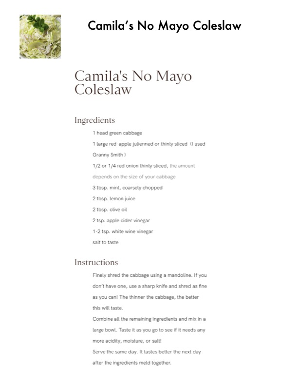

Camila's No Mayo Coleslaw

Original cookbook page 273
Ingredients
- 1 head green cabbage
- 1 large red-apple julienned or thinly sliced (I used
- Granny Smith )
- 1/2 or 1/4 red onion thinly sliced, the amount
- depends on the size of your cabbage
- 3 tbsp. mint, coarsely chopped
- 2 tbsp. lemon juice
- 2 tbsp. olive oil
- 2 tsp. apple cider vinegar
- 1-2 tsp. white wine vinegar
- salt to taste
Instructions
- Finely shred the cabbage using a mandoline. If you don't have one, use a sharp knife and shred as fine as you can! The thinner the cabbage, the better this will taste. large bowl. Taste it as you go to see if it needs any more acidity, moisture, or salt! Serve the same day. It tastes better the next day
Recipe #273 from collection